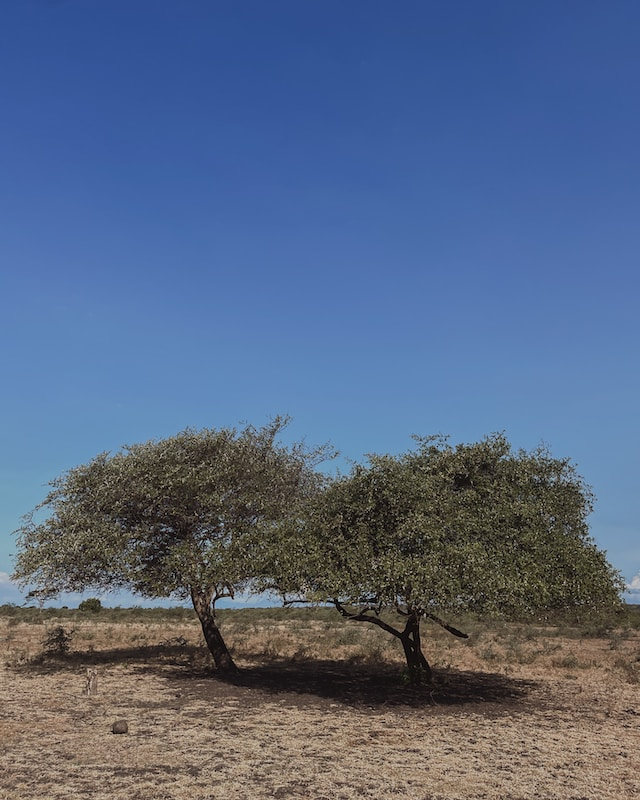

Turn Left
Turn Right
| Waktu | Kegiatan |
|---|---|
| 13.00 | Penjemputan di hotel, perjalanan menuju Baluran |
| 14.30 | Tiba di Baluran dan explore Baluran |
| 17.00 | Menuju rumah makan |
| 18.00 | Makan Malam |
| 19.00 - Selesai | Kembali ke Hotel |
| Waktu | Kegiatan |
|---|---|
| 00.00 | Penjemputan di hotel, perjalanan menuju Paltuding |
| 01.30 | Sampai di Paltuding, briefing dan sharing pendakian 30 menit |
| 02.00 | Pendakian menuju Kawah Ijen |
| 03.30 | Eksplore blue fire, sunrise dan Kawah Ijen |
| 08.00 | Turun menuju Paltuding |
| 08.30 | Breakfast |
| 09.00 | Explore Air Terjun Jagir |
| 11.00 | Perjalanan ke Hotel |
| 11.00 – Selesai | Hotel. Trip selesai |
| Waktu | Kegiatan |
|---|---|
| 10.00 | Penjemputan di hotel, perjalanan menuju Djawatan |
| 11.00 | Sampai di lokasi dan explor fairyland forest 2 hours |
| 13.00 | Makan Siang |
| 14.00 | Menujju pulau merah |
| 15.00 | Enjoy di pantai sambil menunggu sunset di pulau merah |
| 17.00 – Trip selesai |